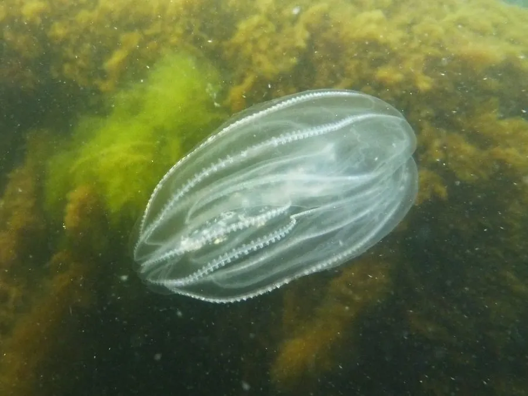

其他无脊椎动物 · 动物界
栉水母 Mnemiopsis leidyi

半透明、带栉板的胶质浮游动物，随压舱水传入黑海后大量繁殖，导致当地渔业资源崩溃，是著名入侵物种。
- 分类
- 门栉水母动物门纲有触手纲目兜水母目科球栉水母科属球栉水母属
- 栖息环境
- 温带和亚热带沿海的浅海水层，随海流漂浮
- 地理分布
- 原产北美东海岸，已入侵黑海、地中海和里海等地
- 保护级别
- 暂无评估；被列为著名海洋入侵物种
物种志
栉水母的身体呈椭圆形或瓜形，半透明，体表有 8 排栉板，栉板上的纤毛摆动时会产生彩虹般的反光，因此得名。它没有刺细胞，靠两条细长的触手粘捕浮游动物，身体柔软易碎，体长约 5–10 cm。
它原产于北美东海岸，20 世纪 80 年代随船舶压舱水传入黑海，在当地缺乏天敌，大量繁殖并捕食浮游动物，与鱼类争夺食物，导致黑海渔业资源严重下降。栉水母雌雄同体，繁殖力极强，能自我受精，环境适宜时种群迅速暴发。它分布于全球温带和亚热带沿海，是研究海洋入侵和生态系统影响的经典案例，也因其生物发光和透明身体被用于科学研究。栉水母的胶质身体还能被用来研究神经和肌肉的起源。
形态与习性
- 食性用触手粘捕浮游动物和鱼卵、幼鱼
- 体长约 5–10 cm
- 特征体表有 8 排栉板，纤毛摆动时泛彩虹光
- 入侵随压舱水传入黑海，导致渔业资源崩溃
- 繁殖雌雄同体，可自我受精，繁殖力极强
- 分布全球温带和亚热带沿海
趣味知识
- 栉水母不是真正的水母，它没有刺细胞，靠触手粘住猎物。
- 它体表的栉板摆动时会泛出彩虹色反光。
- 20 世纪 80 年代它随压舱水进入黑海，成为著名的入侵物种。